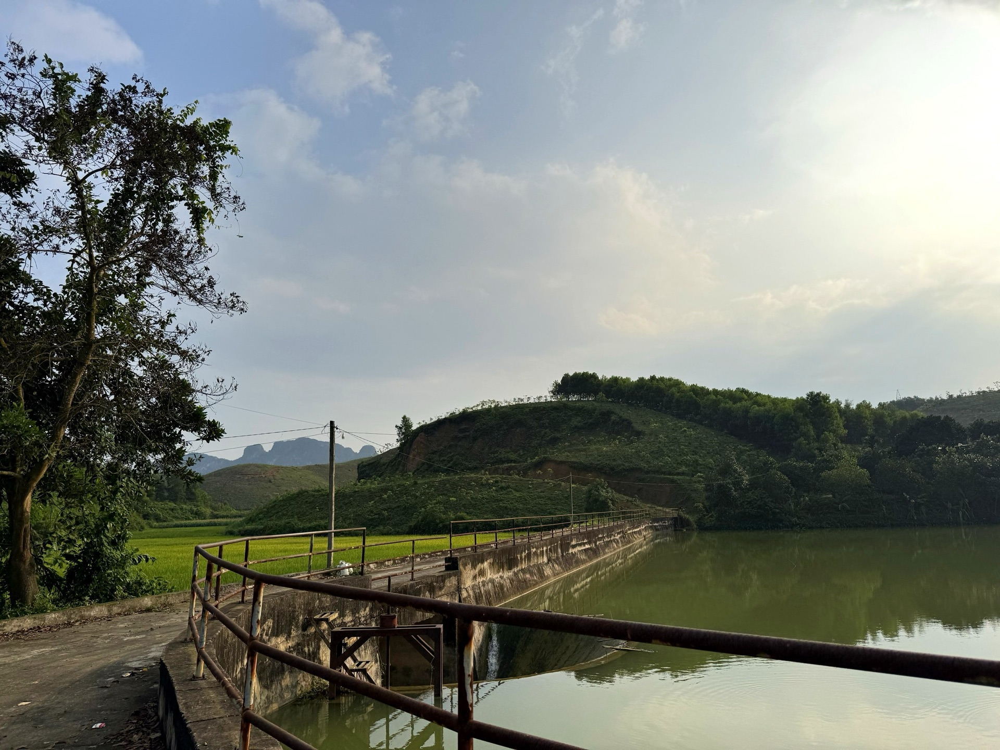

Loại hìnhTypeType
Cảnh quan thiên nhiênNatural landscapesPaysages naturels

Đồi hoa Mường thôn Bơ Môi và đập đồng làng là cụm cảnh quan đồi – đồng đặc trưng của Mường Cốc, nơi sườn đồi hoa giao thoa với công trình thủy lợi lâu đời của người dân địa phương. Từ điểm cao trên đồi, du khách có thể nhìn xuống cánh đồng lúa trải dài xanh mướt và đập làng hiền hòa phản chiếu bầu trời.
Khu vực này nằm trên cung đạp xe từ thôn Bơ Môi lên Rộc Éo qua cánh đồng lúa – một trong những trải nghiệm được yêu thích nhất trong các tour cộng đồng Mường Cốc. Sự kết hợp giữa đồi hoa và đập đồng làng tạo nên khung cảnh làng quê đa chiều, gần gũi và chân thực.
The Muong Flower Hill in Bo Moi village and the village rice field dam form a distinctive hill-field landscape cluster of Muong Coc, where flower-covered hillsides meet ancient local irrigation works. From a high vantage point on the hill, visitors can gaze upon lush green rice fields stretching out and the serene village dam reflecting the sky.
This area is part of the cycling route from thôn Bơ Môi to Rộc Éo, passing through rice fields – one of the most beloved experiences on Mường Cốc community tours. The combination of flower hills and the village dam creates a multifaceted, intimate, and authentic rural landscape.
La colline fleurie de Mường thôn Bơ Môi et le barrage du village forment un ensemble paysager caractéristique de Mường Cốc, où les pentes fleuries rencontrent les anciens ouvrages hydrauliques des habitants. Depuis un point élevé sur la colline, les visiteurs peuvent contempler les rizières verdoyantes s'étendant à perte de vue et le paisible barrage du village reflétant le ciel.
Cette zone fait partie de l'itinéraire cyclable de thôn Bơ Môi à Rộc Éo, traversant des rizières – l'une des expériences les plus appréciées des circuits communautaires de Mường Cốc. La combinaison des collines fleuries et du barrage du village crée un paysage rural multidimensionnel, intime et authentique.


Khu vực Đồi hoa Mường – Đập đồng làng Bơ Môi hướng tới được tích hợp hoàn chỉnh vào sản phẩm cung đạp xe thiên nhiên của Mường Cốc. Định hướng nâng cấp cung đường, bổ sung điểm dừng chân có thông tin bảng giải thích về đặc điểm đồi hoa Mường và lịch sử công trình đập làng. Điểm đến Du lịch cộng đồng Mường Cốc, Xã Mỹ Đức – Thành phố Hà NộiThe Muong Flower Hill – Bo Moi Village Dam area aims to be fully integrated into Muong Coc's nature cycling product. The plan is to upgrade the route, add rest stops with interpretive signs about the characteristics of Muong Flower Hill and the history of the village dam. Muong Coc Community Tourism Destination, My Duc Commune – Hanoi City.La zone de la Colline Fleurie de Muong – Barrage du village de Bo Moi vise à être entièrement intégrée au produit de cyclisme nature de Muong Coc. L'orientation est d'améliorer l'itinéraire, d'ajouter des points de repos avec des panneaux explicatifs sur les caractéristiques de la Colline Fleurie de Muong et l'histoire du barrage du village. Destination de tourisme communautaire de Muong Coc, Commune de My Duc – Ville de Hanoi.